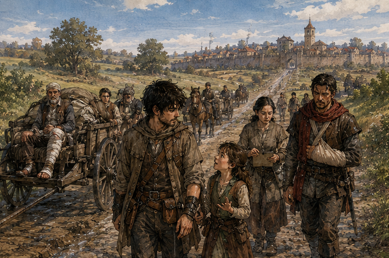
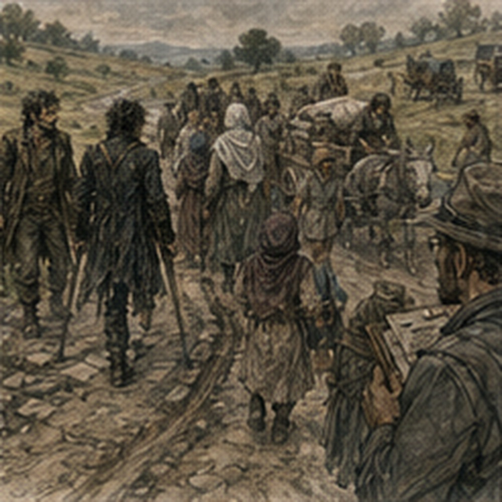

The smallest girl decided I was a disappointing wizard. This took six miles. At first she asked questions. Then she tested.
“Can you make a wall?”
“Yes.”
“Show me.”
“No.”
“Can you stop an arrow?”
“Sometimes.”
“Show me.”
“No.”
“Can you make me invisible?”
“No.”
“Can you make him invisible?”
She pointed at Alden.
“No.”
Alden said, “Why me?”
“Because you’re bigger.”
That was not how invisibility worked. Probably. I had never specialized. The girl sighed.
“What are you for?”
Alden laughed. I looked at her.
“What are you for?”
“I’m six.”
“Convenient.”
Her name was Leni. Her mother, Sava, drove the first cart and had counted the group four times since leaving Darrowmere. Fourteen. Still fourteen. Leni rode beside an older boy named Tem, who had a wooden box full of beetles and had not yet explained why. I hoped he never did.
The third child, Arlo, was nine and deeply offended because everyone kept getting his name wrong. The world was attacking me personally. The old man with the bandaged foot was Marden. He had been kicked by his own mule during the first evacuation. The mule had not come with us. Marden brought this up frequently.
“Good mule.”
“It kicked you,” Alden said.
“Good mule.”
“It broke your foot.”
“Cracked.”
“Good mule?”
“Best I had.”
Alden looked at me. I shrugged. People loved badly designed things all the time. The second cart belonged to two sisters, Fera and Noll. They were leaving because their roof had been damaged during the east breach. Not by a creature. By a watchman. He had fallen through it. Fera was furious. Noll thought it was funny. This had apparently been their relationship for forty years.
“He landed in my bed,” Fera said.
“Your bed needed replacing,” Noll said.
“My roof did not.”
“He apologized.”
“He bled on the blanket.”
“You hated that blanket.”
“I owned it.”
That ended the argument. For approximately three minutes. The remaining adults were less loud. A cooper’s apprentice named Venn traveling to stay with his uncle. A woman named Mera with two sacks of clothing she refused to put in either cart because she did not trust the wheels.
A married couple, Harl and Tessa, who had left their pigs with Harl’s brother and were now arguing about whether that had been wise.

A thin man named Osric who claimed he was only traveling to the city for business. Nobody believed him. He did not seem bothered. And us. Fourteen civilians. Two Bronze. Sixteen people total. The road west was open. That did not mean empty. We passed carts going both directions. Guild riders. Farmers. A wagon carrying barrels. A priest walking alone with mud to his knees.
At the first checkpoint, Darrowmere watch counted us. Fourteen. At the second, city watch counted us. Fourteen. Nobody cared about me or Alden. Good. We walked. My body loosened as morning warmed. Not healed. Functional. The LIMITED CASTING tag remained on my wrist. I did not cast. There was no reason. That was surprisingly difficult. Not because I needed magic. Because having permission made me want to test the edges.
Small, low-load. How small? How low? Three bead-sized Barriers had been fine. Could I hold one for five seconds? Ten? Could I move it? Could I change angle under load? No. You do not test where the limit is. The healer had anticipated me. Rude. Alden walked beside the first cart. His left arm stayed mostly still.
He was better at following his restriction when other people were watching. Also rude. After an hour, he dropped back beside me.
“You pulled me by the scarf.”
I knew immediately what he meant.
“No.”
“Yes.”
“I caught the scarf.”
“You pulled.”
“It tore.”
“That is what I’m saying.”
“I did not intentionally select scarf as rescue equipment.”
He touched the red strip tied around his wrist. It was shorter now. Frayed.
“You owe me a scarf.”
“I saved your throat.”
“The creature saved my throat by biting my coat.”
“My Barrier moved its head.”
“Three inches.”
“Exactly enough.”
“So you owe me a scarf.”
“That is not how debt works.”
“You owe Antonius gold.”
“Stop using that as evidence for everything.”
“It keeps working.”
We walked. The road curved through low fields. Darrowmere disappeared behind a rise. I noticed. Alden noticed me noticing.
“Still feel watched?”
Less.
“Yes.”
He looked back. Nothing.
“Since when?”
“Dyer’s Lane.”
“Not before?”
“Maybe before. Not enough to separate from nerves.”
“The road fight?”
“No.”
“Boat?”
“No.”
“Guild?”
“No.”
He thought.
“So Darrowmere.”
“Probably.”
“Creature?”
“I don’t know.”
“Person?”
“I don’t know.”
“Magic?”
“I don’t know.”
“You’re very useful.”
“I have been told.”
He walked ten steps.
“What was at your window?”
I looked at him.
“How do you know something was at my window?”
“You moved the chair.”
“What?”
“This morning. Chair under the door.”
“That does not imply window.”
“You checked the sill before breakfast.”
I disliked perceptive people.
“A piece of bread.”
Alden stopped. I kept walking. He caught up.
“Bread.”
“Yes.”
“At the window.”
“Yes.”
“What kind?”
“Bread.”
“Greg.”
“Buttered heel.”
He stared.
“What?”
“Nothing.”
“That face means something.”
“It means someone left bread.”
“Or something.”
“Yes.”
“Did you eat it?”
“No.”
“Good.”
“Thank you.”
“You considered it.”
“I did not.”
“You considered whether you could.”
“That is different.”
He laughed. Sava looked back from the cart.
“Problem?” she called.
“No,” Alden called.
“Yes,” I said.
She slowed.
“What?” Sava asked.
“Nothing relevant,” I said.
“Then walk faster,” Sava said.
We did. At midday we stopped near a roadside shrine. Not a temple. A stone niche with three little figures worn smooth by weather. Someone had left apples. Leni took one. Sava made her put it back.
“It’s for travelers,” Leni argued.
“We are travelers.”
“It’s for travelers who need it.”
“I need apple.”
“You had bread.”
“That was hours ago.”
Sava gave her half an onion. Leni looked betrayed. I approved. We ate. Mera sat on her clothing sacks. Fera and Noll argued about roof tiles. Marden described his mule to Arlo. Tem opened the beetle box. I moved away. Alden followed.
“Coward.”
“Yes.”
We sat in the grass. For a while neither of us spoke. That was new. Not uncomfortable. Also new. Alden eventually said, “You really were bad.” I looked at him.
“At what?”
“Fighting.”
“That is rude.”
“You said three.”
“Yes.”
“I thought you were doing the thing.”
“What thing?”
“Making yourself sound worse.”
“Why would I?”
“You do it sometimes.”
I did. Not exactly. I minimized things I did not want examined. Exaggerated things I wanted controlled. Used self-deprecation as misdirection. Not consciously every time. Enough.
“I was not.”
“I know now.”
He pulled grass with his right hand.
“You knew where everything was going.”
“Mostly.”
“But you couldn’t get there.”
There. He had seen it. That bothered me more than the healer.
“Yes.”
“That creature came at you and you knew exactly where to put the sword.”
“Yes.”
“And then you didn’t.”
“My body is nineteen.”
He looked at me. Careful. He did not know why that sentence meant more than it should.
“You are nineteen.”
“Yes.”
“You say that strangely.”
“I have had a difficult week.”

He let it go. Good. Then he said, “I thought you were holding back.”
“Why?”
“Because you’re annoying.”
“That does not follow.”
“You act like you know things.”
“I do know things.”
“Exactly.”
He threw grass at me. I did not dignify it.
“I thought there was another part.”
“There usually is.”
“In the fight?”
“Yes.”
“What?”
“I am better when other people are better.”
He frowned.
“That sounds like a proverb.”
“It is not.”
“Good. I hate it.”
“I was support.”
“Were?”
Careful.
“I trained support.”
That was true. Not complete. He looked at the road.
“So you make everyone else better.”
“Sometimes.”
“How?”
“Depends.”
“That is your favorite answer.”
“It is the correct answer frequently.”
He looked at his left shoulder.
“You told me left.”
“Yes.”
“By the wagon.”
“Yes.”
“I went left.”
“Yes.”
“Didn’t think.”
“I noticed.”
“Was that you making me better?”
“No.”
He looked surprised.
“That was you.”
He was quiet. Good. Let him own it. Then he ruined the moment.
“You still owe me a scarf.”
“I hate you.”
“No you don’t.”
That came easily. Too easily. Neither of us said anything after. Leni shouted from the shrine.
“Wizard!”
I looked. She held up a beetle.
“No.”
“You didn’t even hear the question!”
“No.”
We resumed. The afternoon was slower. Marden’s foot hurt. One cart wheel squealed. Harl wanted to stop and grease it. Tessa wanted to keep moving. Harl won because the wheel did not care about marriage. He greased it. Ten minutes. We lost no one. Fourteen. At a farm crossroads, Osric tried to leave. Sava noticed before we did.
“Where are you going?”
“Shortcut.”
“No.”
He looked at her.
“You’re not watch.”
“No.”
“I know the road.”
“Then why did you join an escort?”
He had no answer he wanted to share. Alden stepped over.
“Where does it go?” Alden asked.
Osric pointed southwest.
“Old mill road,” Osric said.
“City?” Alden asked.
“Eventually,” Osric said.
“Why?” Alden asked.
“Business,” Osric said.
“What business?” Alden asked.
“My business,” Osric said.
Alden looked at me. I shrugged. He was not a prisoner.
“Your name comes off the escort if you leave,” Alden said.
Osric nodded.
“Fine.”
Sava said, “No.” Everyone looked at her. She pointed at Osric.
“His sister told me to get him to the city.”
Osric closed his eyes. There it was. Not business. Family.
“She worries.”
“She should.”
“I am thirty-eight.”
“She knows.”
Alden was trying not to laugh. Osric looked at us.
“I can leave.”
“Yes,” I said.
Sava glared. I continued.
“And she can tell your sister exactly where.”
Osric looked at the southwest road. Then at Sava. Then at us. He returned to the cart. No coercion. Just consequences. I liked Sava. At the next rise, we could see our city. Small at first. Walls. North Gate farther off. Road traffic thickening. Leni stood in the cart. Sava pulled her down.
“Are there monsters there?” Leni asked.
“No,” Sava said.
I did not correct her. Alden glanced at me. He did not either. The city watch checkpoint took our paper. Counted. Fourteen. Signed. The escort ended there. Eight copper each. The clerk paid us. Actual copper. Alden counted his. Then handed me one. I stared.
“What?”
“Soup.”
“You already paid me.”
He froze.
“When?”
“Last night.”
He looked at the copper. Then at me.
“I woke you.”
“Yes.”
“Oh.”
“You forgot?”
“I was tired.”
I took the copper. He looked offended.
“You said I paid.”
“You just gave me money.”
“Give it back.”
“Administrative fee.”
“Greg.”
I gave it back. Mostly because Sava was watching. The civilians dispersed slowly. Not dramatically. Fera and Noll argued about which cousin to stay with. Marden needed a cart. Harl and Tessa immediately began worrying about the pigs they had left behind. Mera still carried both clothing sacks. Osric disappeared before Sava could assign him another relative. Tem showed his beetles to a city guard.
Arlo corrected someone who called him Arlo. Leni stood in front of me.
“You’re still disappointing.”
“Yes.”
She handed me something. A beetle. I nearly dropped it. She laughed and ran. It was wooden. Carved. Small. Tem’s work, probably. I looked at it. Alden said, “Powerful artifact.”
“I will kill you.”
“Limited casting.”
“Does not limit murder.”
He laughed. Sava called goodbye. Then they were gone. Not gone. In the city. Elsewhere. Continuing. The Darrowmere event had followed us home in fourteen separate directions. That was probably how events actually spread. Not songs first. People. Then songs. Alden stretched his right arm.
“What now?”
We had eight copper. Injuries. Recovered swords. One wooden beetle. No immediate contract. Darrowmere behind us. Home ahead. Hessa. Jorren. Antonius. Guild. South Canal sacks. Octavia somewhere moving freight. Sevren somewhere being Sevren, though I did not know him well enough to know what that meant. Too many directions. Alden looked at me.
“You’re doing the face.”
“What face?”
“The one where you turn a day into six problems.”
I stopped. Annoying.
“What do you want?”
He blinked. That was not what he expected.
“Food.”
“Again?”
“It has been hours.”
Fair.
“Then food.”
“And scarf.”
“No.”
“Scarf first.”
“Food.”
“You owe me.”
“I saved your life.”
“You damaged my property while doing it.”
We walked toward the market arguing about two feet of red cloth. For once, neither of us looked back east.